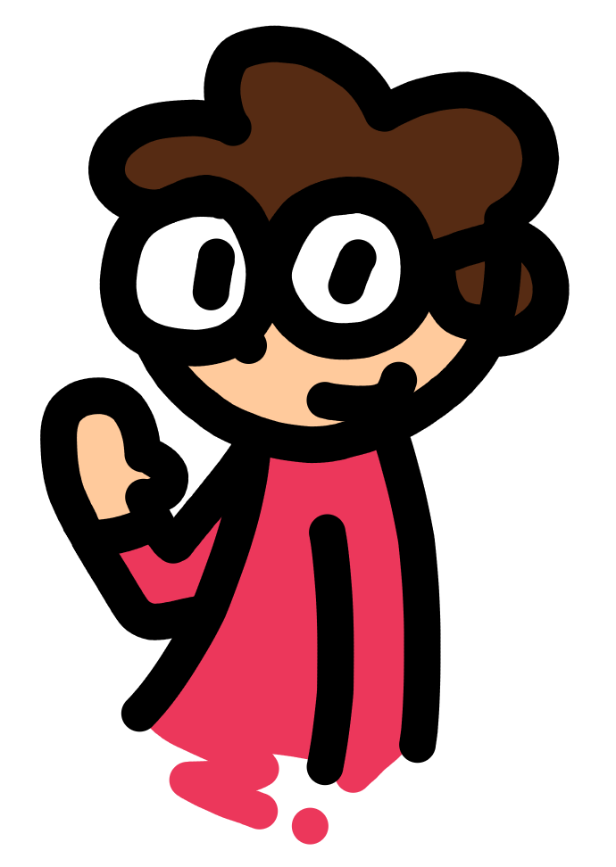

Sobre
Olá, eu sou o Fupi. Eu faço coisas na internet desde 2013, e este site vai servir para eu mostrá-las. Você encontrará vários tipos de coisas aqui, como por exemplo:
- Jogos
- Animações
- Músicas
- Projetos não terminados
- Tutoriais (em breve?)
- Qualquer outra coisa que eu tiver vontade de postar
Eu vou atualizar esse site quando eu puder. A maioria dos meus jogos novos são feitos para game jams (competições de criação de jogos), especificamente a Ludum Dare e a GMTK Jam, então você pode esperar pelo menos 3 jogos novos por ano.
Se você quer saber quando eu faço algum projeto, work-in-progress, etc, me siga no Twitter!
Todas as minhas coisas (jogos, código, arte, música, este site, exceto meus projetos do Scratch) são domínio público, e todos os assets usados para fazê-los (excluindo software) também são. Sinta-se livre para usar minhas coisas como quiser, crédito é opcional.
O que eu uso
Se você quer saber os programas e outras coisas que eu uso, aqui vai uma listinha do que eu consigo lembrar:
Código aberto
- Godot Engine (para fazer jogos e até animações)
- Krita (para fazer gráficos e edição de imagem)
- Inkscape (para fazer gráficos em vetorial, por exemplo meu logo)
- Kdenlive (editor de vídeo que eu uso pra vídeos simples sem muitas transições e animação)
- Blender (programa de modelagem 3D)
- LMMS (DAW simples mas muito boa para fazer música)
- Audacity (editor de áudio que eu uso pra muitas coisas)
- Firefox (tem um inspetor bem completo, dá pra tirar print de elementos HTML específicos, e abrir arquivos baixados sem precisar salvá-los)
Grátis
- Visual Studio Code (editor de código que eu usei pra fazer esse site, você pode hostear localmente o seu site pra ver as mudanças que você faz)
- Vivaldi (navegador muito bom pra quem gosta de usar várias abas ao mesmo tempo, super customizável)
Pago
- VEGAS Movie Studio 13 Platinum (editor de vídeo que eu uso que, apesar de ser antigo e só funcionar no Windows, é bom e barato - se você comprar em promoção)
Contato
Eu nunca tô ocupado demais pra conversar então fala comigo pfv:
- Discord: Fupi#4400
- Mande DM no Twitter: @fupibr
- Email: fupicat (arroba) gmail (ponto) com